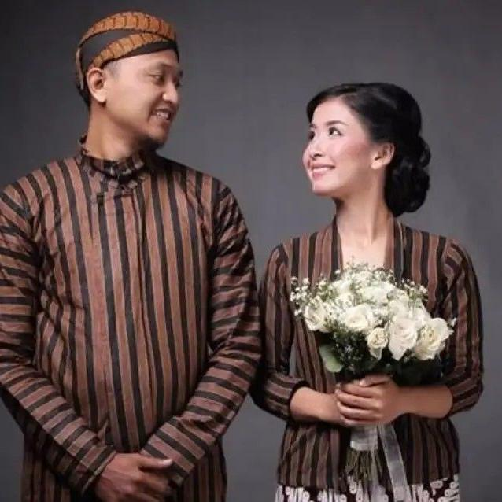

Warisan Budaya Nusantara
Kenakan Cerita Leluhur dalam Setiap Helai Kain
Dari kain lurik tenun tangan Klaten hingga beskap Solo yang dijahit perajin berpengalaman — Laras Budaya menghadirkan busana tradisional Indonesia untuk generasi masa kini.

Tenun Tangan Asli
4.8/5 dari 300+ pembeli

Tentang Kami
Didukung UMKM Perajin Lokal
Setiap produk di Laras Budaya berasal dari perajin dan UMKM busana adat di Surakarta, Yogyakarta, dan Klaten. Kami percaya bahwa membeli busana tradisional bukan sekadar transaksi, melainkan cara nyata melestarikan keterampilan dan cerita generasi sebelumnya.
Baca SelengkapnyaKata Mereka